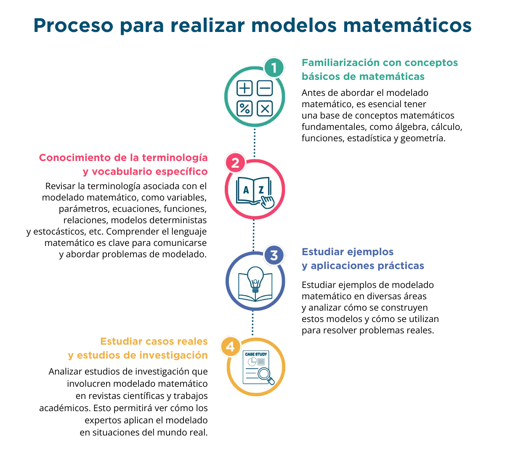

build Introducción
Los datos son la materia prima con la que las organizaciones gestionan y generan negocios, de forma que son los activos más valiosos que puede tener una empresa. La creciente digitalización ha provocado un mayor uso de herramientas y dispositivos cuya operación genera una enorme cantidad de datos que, si es correctamente analizada, proporciona información valiosa para la toma de decisiones y para hacer nuevos negocios.
Para el análisis de los datos, es indispensable expresarlos a través de modelos matemáticos, que permiten describir un objeto o proceso que existe en el universo no matemático. Así, el modelado es un proceso que identifica y asocia objetos, procesos físicos, administrativos, sociales, entre otros; por medio de símbolos o estructuras, relaciones, atributos, entidades y acciones de un sistema. En consecuencia, para que un modelo sea útil debe ser representativo del sistema que se desea estudiar. Generalmente un modelo no incluye todos los aspectos de un sistema real, sólo los más relevantes para el propósito de su usuario. Por eso la selección de los aspectos a incluir es parte del proceso de modelado.
Un modelo adquiere valor si es capaz de mejorar la comprensión del comportamiento del sistema bajo estudio en forma más efectiva que la que se logra con la observación de este, así como de predecir con base en los datos, lo que puede ocurrir. Los modelos tienen la ventaja de proporcionar información a menor costo y mayor velocidad que la observación del sistema real.
La realidad se puede modelar a través de gráficos, físicos, conceptuales y matemáticos. Los modelos matemáticos pueden clasificarse como determinísticos, que es el que no contiene consideraciones probabilísticas; cualitativos, modelo en el que se representan cualidades no numéricas, por ejemplo con la teoría de conjuntos; modelos descriptivos, en donde se refiere a la descripción del sistema real en términos matemáticos; modelo cuantitativo, se enfoca en análisis estadístico o numérico de los datos; de optimización, el cual permite seleccionar entre varias alternativas para elegir la mejor de acuerdo con los criterios establecidos; y probabilísticos, que son los que toman en cuenta la incertidumbre.
Así, el uso de los modelos matemáticos permite a su usuario la mejor descripción de los hechos, incluye los factores, variables y relaciones que no se vislumbran mediante la observación. Su fundamento en datos lleva a que la empresa adquiera capacidad para predecir las ventas, la producción, los tiempos de entrega, la reacción del consumidor, etc.
En resumen, un modelo matemático se explica como la abstracción simbólica y simplificada de las relaciones existentes entre los elementos de un sistema, que es representado en forma aproximada por medio de expresiones matemáticas.
troubleshoot ¿Qué son los modelos matemáticos?
Definición del eje temático Modelos Matemáticos
Los modelos matemáticos son abstracciones de la realidad que pueden ser útiles para las pymes en diversos aspectos. Existen diversas clasificaciones para los modelos matemáticos aplicables a la toma de decisiones, la que resulta más útil en este caso es la clasificación según su objetivo, en donde se pueden encontrar principalmente los modelos para evaluar escenarios, modelos de simulación, modelos de proyección, modelos de optimización, y modelos de redes y grafos.
En el ámbito empresarial, un modelo matemático utiliza conceptos y herramientas para analizar datos, simular escenarios y tomar decisiones informadas. con el fin de proporcionar una visión más clara, prever resultados y optimizar operaciones.
Los modelos matemáticos pueden aplicarse en diversas áreas de una pyme, tales como pronóstico y planificación financiera, análisis de mercado y clientes, optimización de recursos, evaluación de riesgos, desarrollo de productos, entre muchas más.
Los modelos matemáticos son abstracciones de la realidad, y la exactitud de sus resultados depende de la calidad y relevancia de los datos utilizados, así como de las restricciones incorporadas al modelo. Por lo que es de suma importancia que las empresas entiendan las variables y restricciones del modelo y apliquen su conocimiento y criterio empresarial para interpretar los resultados de manera adecuada.
Modelos Matemáticos
Los modelos matemáticos son abstracciones de la realidad que pueden ser útiles para las pymes en diversos aspectos. Existen diversas clasificaciones para los modelos matemáticos aplicables a la toma de decisiones, la que resulta más útil en este caso es la clasificación según su objetivo, en donde se pueden encontrar principalmente los modelos para evaluar escenarios, modelos de simulación, modelos de proyección, modelos de optimización, y modelos de redes y grafos.
Modelos para evaluar escenarios
Los modelos para evaluar escenarios son herramientas que se utilizan para analizar y prever el comportamiento de un sistema en diferentes situaciones o escenarios posibles. Examinan la forma en que algunas variables cambian y cómo sus variaciones afectarían el resultado final.
Entre los modelos para evaluar escenarios están los de simulación, los de proyección, los de optimización, los de sensibilidad y análisis de riesgo, los de series de tiempo y pronóstico, los de simulación, y los de redes y grafos. La elección del modelo depende del problema específico a afrontar y la cantidad de datos con que se cuente.
Modelos de Simulación
Estos modelos se construyen para simular el comportamiento de un sistema en un entorno controlado. Algunos ejemplos de los sistemas de simulación son la simulación de Montecarlo, que se utiliza para evaluar el impacto de la incertidumbre propia de las proyecciones de futuro, en las que no se puede tener certeza plena sobre lo que sucederá. Este opera generando valores aleatorios para las variables de entrada, y se realiza una gran cantidad de simulaciones para estimar la probabilidad de que se presenten los resultados buscados; simulación de colas,en donde simulan las llegadas y los tiempos de servicio para evaluar el tiempo de espera promedio para atención a clientes en bancos o centros de atención a clientes; simulación de sistemas de inventarios, se usa para analizar y optimizar los niveles de inventario en un almacén o cadena de suministro, lo cual permite evaluar el impacto de diferentes políticas de inventario y pronosticar el desempeño del sistema en el tiempo.
Los modelos de simulación se aplican en diversas áreas para entender el comportamiento de sistemas complejos, evaluar diferentes escenarios y tomar decisiones informadas para mejorar la eficiencia y el rendimiento del sistema.
Para profundizar en los modelos de simulación recomendamos visitar la siguiente página de ANIA que muestra una aplicación en la industria alimenticia, replicable a diversos sectores.
Modelos de Proyección
Estos modelos se utilizan para prever cómo ciertas variables cambiarán en el futuro en función de patrones de comportamiento históricos. Algunos ejemplos de esta clase de son
- el modelo de crecimiento exponencial, que se utiliza para proyectar el crecimiento futuro de una población o las ventas de una empresa; sirve para proyectar el crecimiento a corto plazo;
- modelo de regresión lineal, se emplea para proyectar una variable dependiente en función de una variable independiente, utilizando la línea recta que mejor se ajusta a los datos históricos para predecir valores futuros;
- modelo ARIMA (Autoregressive Integrated Moving Average), que se usa para proyectar series de tiempo que pueden contener estacionalidades. Este modelo combina la auto regresión (AR) y el promedio móvil (MA) para hacer proyecciones más precisas;
- modelo de extrapolación de tendencias, se usa para proyectar datos en función de una tendencia observada en los datos históricos, con la suposición de que la tendencia histórica no cambiará en el futuro;
- modelo de difusión de innovaciones, que se aplica para proyectar la adopción y difusión de innovaciones o tecnologías en una población; con base en las curvas de adopción, ayuda a entender cómo se propagarán las innovaciones en el tiempo;
- modelo de Porter, que se utiliza en análisis de mercado y estrategias empresariales para proyectar la rentabilidad de una industria o un sector en función de la competencia y las fuerzas del mercado;
- modelos de Series de Tiempo y Pronóstico, que analizan datos históricos y patrones temporales para pronosticar valores de una variable;
- modelos de aplicación de aprendizaje de máquina supervisado y no supervisado, que, con base en los patrones generados en los datos históricos, permiten hacer predicciones cuya precisión depende de la cantidad y calidad de los datos.
El siguiente video muestra la importancia de los modelos matemáticos para predecir o proyectar procesos. https://www.youtube.com/watch?v=5L3wJymM5NE
Modelos de Optimización
Es una representación formal y sistemática de un problema en el que se busca encontrar la mejor solución posible, esto es, el máximo o mínimo valor de una función objetivo sujeta a un conjunto de restricciones. Estos modelos utilizan técnicas y herramientas matemáticas para encontrar la combinación óptima de variables o decisiones que satisfacen ciertos criterios o condiciones predefinidas por quien toma las decisiones en la empresa. Algunos ejemplos de modelos de optimización son:
- la programación lineal, que busca maximizar o minimizar una función lineal sujeta a restricciones lineales, lo cual se aplica en problemas de planificación y asignación de recursos;
- programación no lineal, es un modelo de optimización en donde la función objetivo o las restricciones no se comportan de forma lineal; se aplica en problemas complejos donde las relaciones entre variables no son lineales, tales como logística, cadena de suministro, enrutamiento de vehículos, producción, planificación, economía, finanzas, transporte, asignación de recursos, etc.
El video que se muestra a continuación describe la aplicación de modelos de optimización con ejemplos. https://www.youtube.com/watch?v=lxln4J-GIGY
Modelos de Redes y Grafos
Son herramientas que se utilizan para representar y analizar sistemas complejos que implican relaciones y conexiones entre diferentes elementos. Estos modelos se basan en teoría de grafos y permiten estudiar y resolver una variedad de problemas en diferentes campos, analizan cómo los cambios en la estructura de la red afectan el flujo de información, recursos o influencias. Algunos ejemplos de los modelos de redes y grafos son:
- el modelo de ruta más corta, que se utiliza para encontrar la ruta más corta entre dos nodos en una red;
- modelo de flujo máximo, que se emplea para encontrar el flujo máximo que puede pasar a través de una red desde una fuente hasta un destino determinado, teniendo en cuenta las capacidades de las conexiones;
- modelo de árbol de expansión mínima, que se utiliza para encontrar el árbol de expansión mínima en una red que conecte todos los nodos con el mínimo costo total de conexiones.
Estos modelos sirven para entender y mejorar la eficiencia y el rendimiento de sistemas complejos que involucran conexiones y relaciones múltiples entre elementos, lo cual es útil para resolver problemas de optimización, planificación, logística, comunicación y análisis de estructuras de redes.
En el siguiente video introductorio a la Teoría de grafos podrás observar cómo se aplica este modelo de redes y grafos a problemas y medios concretos como redes sociales digitales
Referencias
Álvarez, A. B., Cribeiro, Y. M., Iznaga, T. B., & Domínguez, M. F. (2010). Aplicación de los modelos matemáticos microbianos en la industria alimentaria.
Cid, G., López, T., González, F., Herrera, J., & Elena Ruiz, M. (2011). Propiedades físicas de algunos suelos de Cuba y su uso en modelos de simulación. Revista Ciencias Técnicas Agropecuarias, 20(2), 42-46.
Curiel, J. R. H. (2020). Modelos matemáticos aplicados a la economía - Canal UTEL - Conocimiento compartido. Canal UTEL - Conocimiento Compartido. https://canal.utel.edu.mx/2017/08/17/modelos-matematicos-aplicados-a-la-economia/
González, M. M., García, M. L. S., & Limón, M. L. S. (2021). Modelo de proyección financiera para el sector construcción. Lúmina, 22(1), 6.
Gross, J. L., & Yellen, J. (2003). Handbook of Graph Theory. CRC Press.
Hall, S. H. (2021). Cómo dar presentaciones a ejecutivos de alto nivel y a los altos directivos. Business Envato Tuts+. Recuperado de https://business.tutsplus.com/es/tutorials/presentations-to-senior-management--cms-34148
iAgua (2023). ¿Cómo ayudan las matemáticas y la inteligencia artificial a la gestión del agua? Recuperado de iAgua. https://www.iagua.es/respuestas/como-ayudan-matematicas-y-inteligencia-artificial-gestion-agua
Josefina, C. C. F. (2001). El modelado matemático: una herramienta útil para la industria alimenticia. Recuperado de http://sedici.unlp.edu.ar/handle/10915/105741
Menéndez Velázquez, A. (1998). Una breve introducción a la teoría de grafos. Suma.
Pérez Peña, R. (2019). Introducción a los modelos de optimización. Sello Editorial UniPiloto.
Pérez Porto, J., Gardey, A. (2008). Modelo matemático - Qué es, definición, utilidad y clasificación. Recuperado de https://definicion.de/modelo-matematico/
loyalty Beneficios potenciales de los modelos matemáticos

account_tree Proceso para realizar modelos matemáticos

build Desarrollo
1.1. Modelos Matemáticos
1.2. Modelos de Simulación
Para profundizar en los modelos de simulación recomendamos visitar la siguiente página de ANIA que muestra una aplicación en la industria alimenticia, replicable a diversos sectores.
1.3. Modelos de Proyección
El siguiente video muestra la importancia de los modelos matemáticos para predecir o proyectar procesos. https://www.youtube.com/watch?v=5L3wJymM5NE
1.4. Modelos de Optimización
El video que se muestra a continuación describe la aplicación de modelos de optimización con ejemplos. https://www.youtube.com/watch?v=lxln4J-GIGY
1.5. Modelos de Redes y Grafos
En el siguiente video introductorio a la Teoría de grafos podrás observar cómo se aplica este modelo de redes y grafos a problemas y medios concretos como redes sociales digitales https://www.youtube.com/watch?v=F5Xjpg0-NhM
Referencias
Álvarez, A. B., Cribeiro, Y. M., Iznaga, T. B., & Domínguez, M. F. (2010). Aplicación de los modelos matemáticos microbianos en la industria alimentaria.
Cid, G., López, T., González, F., Herrera, J., & Elena Ruiz, M. (2011). Propiedades físicas de algunos suelos de Cuba y su uso en modelos de simulación. Revista Ciencias Técnicas Agropecuarias, 20(2), 42-46.
Curiel, J. R. H. (2020, 21 mayo). Modelos matemáticos aplicados a la economía - Canal UTEL - Conocimiento compartido. Canal UTEL - Conocimiento Compartido. https://canal.utel.edu.mx/2017/08/17/modelos-matematicos-aplicados-a-la-economia/
¿Cómo ayudan las matemáticas y la inteligencia artificial a la gestión del agua? (2023). iAgua. https://www.iagua.es/respuestas/como-ayudan-matematicas-y-inteligencia-artificial-gestion-agua
González, M. M., García, M. L. S., & Limón, M. L. S. (2021). Modelo de proyección financiera para el sector construcción. Lúmina, 2(1), 6.
Gross, J. L., & Yellen, J. (2003). Handbook of Graph Theory. CRC Press.
Hall, S. H. (2021). Cómo dar presentaciones a ejecutivos de alto nivel y a los altos directivos. Business Envato Tuts+. https://business.tutsplus.com/es/tutorials/presentations-to-senior-management--cms-34148
Josefina, C. C. F. (2001). El modelado matemático: una herramienta útil para la industria alimenticia. http://sedici.unlp.edu.ar/handle/10915/105741
Menéndez Velázquez, A. (1998). Una breve introducción a la teoría de grafos. Suma.
Pérez Peña, R. (2019).Introducción a los modelos de optimización. Sello Editorial UniPiloto.
Pérez Porto, J., Gardey, A. (13 de noviembre de 2008).Modelo matemático - Qué es, definición, utilidad y clasificación, definición. de. Última actualización el 9 de agosto de 2022. Recuperado el 4 de agosto de 2023 de https://definicion.de/modelo-matematico/